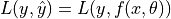
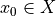
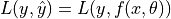
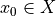
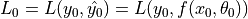
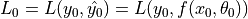
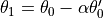

TensorFlow Overview¶
When we say “I want to learn a DL model”, “I want to learn TensorFlow” or “I want to learn TensorFlow 2.0”, what do we actually want? As a matter of fact, the expectations may differ largely between different groups.
For students and researchers: To build and train models¶
If you are a student beginning to learn ML / DL, you may have already finished Andrew Ng’s ML open courses or Standford’s UFIDL Tutorial, or are currently attending the DL course on campus. You may also have already known the differentiation chain rule and the gradient descent; several types of loss functions; and certain general knowledge of convolutional neural network (CNN), recurrent neural network (RNN) and reinforcement learning (RL) theories. Nevertheless, maybe you still do not know how to implement them with programming. You want to have a library to help you practice those formulae and algorithms in the textbook.
To be specific, take the most common supervised learning as an example. Assume that you have already mastered a model  (in which x and y are input and output and
(in which x and y are input and output and  is the program parameter), determined a loss function
is the program parameter), determined a loss function  , and obtain a batch of data
, and obtain a batch of data  and corresponding labels
and corresponding labels  . At this point, you will want to have a library that helps you do the following:
. At this point, you will want to have a library that helps you do the following:
Use computer programs to represent mathematical concepts such as vectors, matrices and tensors; and easily perform operations.
Construct the model
 and the loss function  conveniently. Given the input , the corresponding labels
and the loss function  conveniently. Given the input , the corresponding labels  , and the parameter
, and the parameter  of the current iteration, it is easy to compute the model prediction
of the current iteration, it is easy to compute the model prediction  and evaluate the loss function .
and evaluate the loss function .Evaluate the partial derivative of the loss function
 with respect to the model parameter given , , and , that is to evaluate
with respect to the model parameter given , , and , that is to evaluate  without manual derivation (which means this library possess certain ability of “symbolic computation” so as for conducting reserve differentiation with the chain rule).
without manual derivation (which means this library possess certain ability of “symbolic computation” so as for conducting reserve differentiation with the chain rule).Call some optimization procedure to update the model parameter
of the current iteration based on the calculation of the partial derivative to obtain the parameter of the next iteration (e.g.,  in gradient descent where is the learning rate).
To say in a more abstract way, this library you desire needs to acheive:
Programmatic representation of mathematical concepts and operatios.
Find the gradient of any differentiable function
 at the given independent variable
at the given independent variable  (ability of “symbolic computation”).
(ability of “symbolic computation”).
For developers and engineers: To call and deploy models¶
If you are a developer or an engineer who has devoted yourself in the IT industry for many years, you may have not been so familiar with those maths you learnt in college (“Multivariable functions? Partial differentiation? What are they?”). Nevertheless, perhaps you still wish to add some AI-related functions into your product, or deploy some ready-made DL models to various scenarios. Specifically, this includes:
How to export a trained model?
How to utilize a pre-trained model on the local machine?
How to efficiently run models on servers, mobile terminals, embedded devices, and even web pages?
……
What can TensorFlow do for us?¶
TensorFlow can provide a complete solution to these needs. To be in specific, TensorFlow features:
Model building and debugging: Use the Eager Execution mode and the well-famed neural network high-level API framework, Keras, combined with TensorBoard, the visualization tool, to build and debug models easily and quickly.
Model Training: Support model training on CPU / single GPU / multiple GPUs on one machine / multi-machine clusters / TPU, making full use of massive data and computing resources for efficient training.
Model Deployment: By using components such as TensorFlow Serving, TensorFlow Lite, and TensorFlow.js, deploy TensorFlow models on various types of scenarios such as servers, mobile terminals, embedded devices, and web pages seamlessly.
Calling pre-trained models: Call pre-trained ready-made models on TensorFlow Hub and Tensor2Tensor.